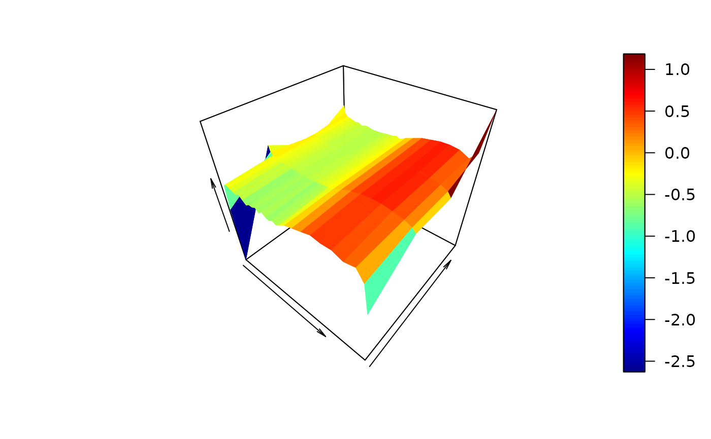

Three-dimensional plots of control nets and/or surfaces
Usage
# S3 method for cpr_cn
plot(
x,
...,
xlab = "",
ylab = "",
zlab = "",
show_net = TRUE,
show_surface = FALSE,
get_surface_args,
net_args,
surface_args,
rgl = TRUE
)Arguments
- x
a
cpr_cnobject- ...
common arguments which would be used for both the plot of the control net and the surface, e.g., xlim, ylim, zlim.
- xlab, ylab, zlab
labels for the axes.
- show_net
logical, show the control net
- show_surface
logical, show the tensor product surface
- get_surface_args
a list of arguments passed to the
get_surfacecall. This call generates the needed data sets used in the plotting.- net_args
arguments to be used explicitly for the control net. Ignored if
show_net = FALSE.- surface_args
arguments to be used explicitly for the surface. Ignored if
show_surface = FALSE.- rgl
If
TRUE, the default, generate usergl::persp3dto generate the graphics. IfFALSE, useplot3D::persp3Dto generate the graphics.
Details
This plotting method generates three-dimensional plots of the control net,
surface, or both, for a cpr_cn objects. The three-dimensional plots
are generated by either persp3D form the plot3D
package or persp3d from the rgl package.
rgl graphics may or may not work on your system depending on support
for OpenGL.
Building complex and customized graphics might be easier for you if you use
get_surface to generate the needed data for plotting. See
vignette(topic = "cnr", package = "cpr") for examples of building
different plots.
For rgl graphics, the surface_args and net_args are
lists of rgl.material and other arguments passed to
persp3d. Defaults are col = "black", front =
"lines", back = "lines" for the net_args and
col = "grey20", front = "fill", back = "lines" for the
surface_args.
For plot3D graphics there are no defaults values for the
net_args and surface_args.
See also
plot.cpr_cp for plotting control polygons and splines,
persp3d and rgl.material for generating
and controlling rgl graphics. persp3D for building
plot3D graphics. get_surface for generating the data sets
needed for the plotting methods.
Examples
acn <- cn(log10(pdg) ~ btensor( x = list(day, age)
, df = list(30, 4)
, bknots = list(c(-1, 1), c(44, 53)))
, data = spdg)
# plot3D
plot(acn, rgl = FALSE)
#> Warning: RGL: unable to open X11 display
#> Warning: 'rgl.init' failed, running with 'rgl.useNULL = TRUE'.

# rgl
if (FALSE) {
plot(acn, rgl = TRUE)
}